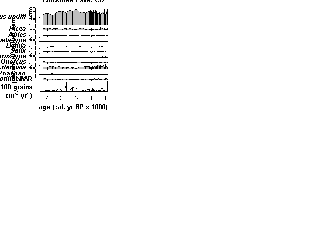

Contents
Fig_S2_script.m
Make Figure S2 from: Dunnette P.V., P.E. Higuera, K.K. McLauchlan, K.M. Derr, C.E. Briles, M.H. Keefe. 2014. Biogeochemical impacts of wildfires over four millennia in a Rocky Mountain subalpine watershed. New Phytologist Accepted.
Fig. S2. Pollen diagram for Chickaree Lake. Pollen was sampled at a median interval of 7.5 cm (~60 yr) in the upper 175 cm of the core and a median interval of 25 cm (~200 yr) below 175 cm.
FILE REQUIREMENTS: (1) CH10_PollenCounts.xls -- Raw pollen counts for Chickaree Lake, CO (2) CH10_charData.xls -- charcoal data, for use in CharAnalysis (3) CH10_charResults.xls -- results from CharAnalysis
DEPENDENCIES: (1) pollenDiagram_ROMO.m -- Matlab function to plot pollen data. Note that the format of Fig. S2 differs from the default figure created from this function. The formatting in the figure was manually changed after the output from this function.
CITATION, FILES, AND SELF-AUTHORED FUNCTIONS AVAILABLE FROM FigShare Higuera, P.E. and P.V. Dunnette. 2014. Data, code, and figures from Dunnette et al. 2014. figshare. http://dx.doi.org/10.6084/m9.figshare.988687
Created by: P.E. Higuera Created on: 2007 Updated: Not tracked; most recent 4/2014 by P.V. Dunnette Edited: 4/2014 for publication, by P.E. Higuera.
University of Idaho, PaleoEcology and Fire Ecology Lab http://www.uidaho.edu/cnr/paleoecologylab phiguera@uidaho.edu
clear all
Set working directories: directories where input data are located
%%%% IF ALL FILES ARE LOCATED IN THE SAME DIRECTORY AS THIS SCRIPT, CHANGE %%%% workdingDir to 'pwd' startDir = pwd; % Record starting path workingDir = 'L:\4_archivedData\Dunnette_et_al_2014\CH10_pollen\'; workingDir2 = 'L:\4_archivedData\Dunnette_et_al_2014\CH10_charcoal\';
Input variables
site = {'Chickaree Lake, CO'}; % site name
zd = [-57 1200]; % zone dates
szd = [-9999]; % sub-zone divisions
taxa_plot = [3:5 15 17 18 7 23 44 42 51]; % Taxa to include in the plot %Adjust this.
taxa_for_sum = [1:89]; % Taxa to include in the pollen sum
ybp_start = 4500; % [cal ybp] year to start record
ybp_stop = -60; % [cal ybp] year to stop record
peaks = 0; % 1 = plot peaks (with background), 0 = don't
transform = 0; % 0 == none, 1 = sqrt pollen
printing = 0; % Save file? 1 == yes, 0 == no
Load input data:
Load charcoal data:
cd(workingDir2) % Change to working directory char_counts = csvread('CH10_charData.csv',1,0); char_peaks = csvread('CH10_charResults.csv',1,0); char_peak_id = char_peaks(:,[1 2 6 7 19]); % char_peaks = -999; % Load pollen data: cd(workingDir) % Change to working directory [data taxa] = xlsread('CH10_PollenCounts.xls','c1:di40'); % Only load pollen data through row 41, 4269 yr BP. taxa(1:2) = []; % Delete the first two rows to include only taxa pollen_counts = data(:,3:end)'; pollen_cm = data(:,1); pollen_ybp = data(:,2); p_analog = -999; scdv = -999; cd(startDir)
Run pollenDiagram_ROMO.m function:
[CHAR,char_ybp,pol_dat,pol_ybp,pol_sum] =... pollenDiagram_ROMO(site,pollen_counts,pollen_cm,pollen_ybp,taxa_for_sum,... taxa,taxa_plot,char_counts,char_peak_id,peaks,ybp_start,ybp_stop,... transform,scdv,p_analog,zd,szd,printing); pol_percent = pol_dat(:,:,1)';